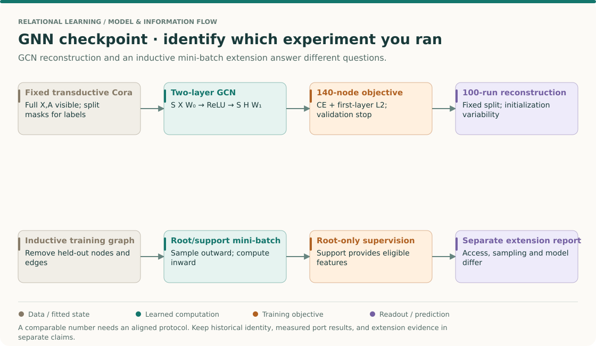
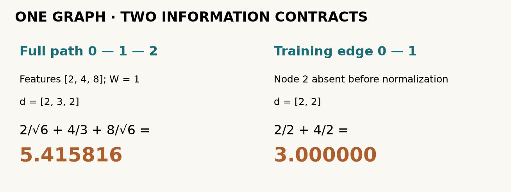
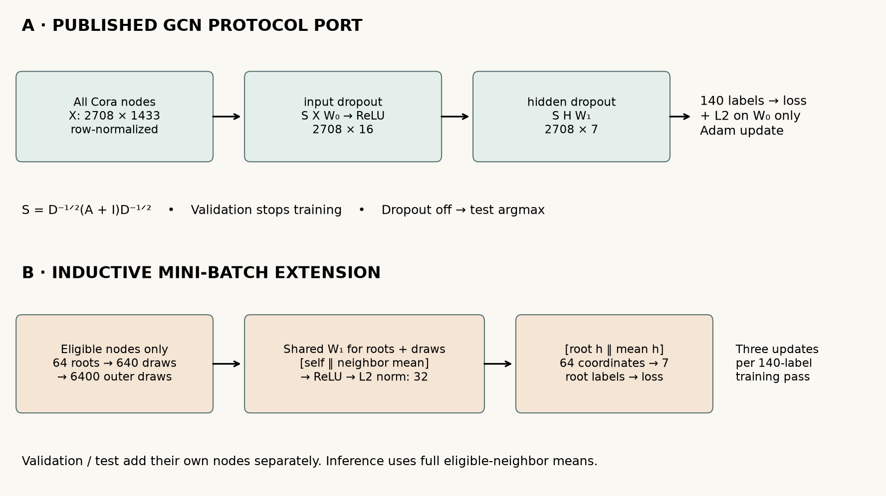
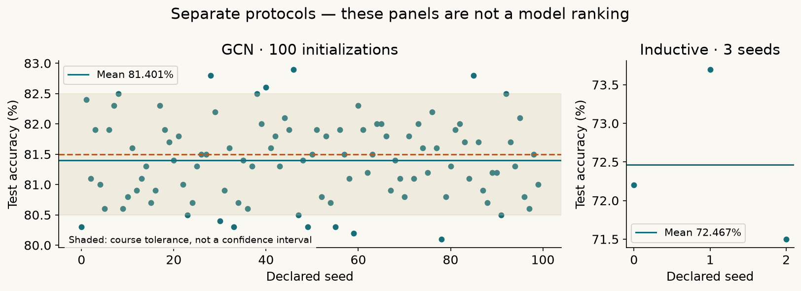

Year 3 · Quarter 1 · Lesson 090
Q1 checkpoint: build and defend a GNN
0 · Close the notes first¶
Your win: hand over a runnable GNN, a benchmark report and an inductive mini-batch implementation whose information boundary you can defend. This is the Q1 checkpoint, not a new architecture survey. Allow one session for the short reading and several sessions for the lab and written defense.
Before reading further, answer from memory:
- On a three-node path, why does adding self-loops change the degrees used by a GCN?
- Why does masking test labels fail to make a transductive graph experiment inductive?
- What evidence would distinguish “my mean accuracy is close” from “I reproduced the experiment”?
Lesson 89 made a large graph trainable. Here you must assemble the whole argument: the messages are right, the training data is allowed, the benchmark is faithfully specified, and the conclusion follows from the measurements. These are prerequisites for learning across foreign-key relationships in the next quarter. Our mission demands defensible relational results, not simply a working GNN import.
Primary reading: revisit Kipf & Welling, §3, §5.2 and Table 2 and Hamilton et al., Algorithm 1 and §3.1. The pinned GCN release resolves concrete implementation choices. Lesson 82 and Lesson 83 are repair references; attempt retrieval first.
THE BIG PICTURE · LESSON 090
Build on what you know. Lessons 81–89 supplied message functions, support rules, readouts and samplers. Lessons 60 and 70 supplied evidence discipline. This checkpoint combines those skills: reconstruct a model and explain exactly what its measured result establishes.
The next question. The next graph units can add heterogeneity and relational tasks only after these boundaries are secure. Keep the tabular comparator from Lesson 80 and this explicit graph contract as reusable research tools.
Open the SSL → relational → graph model map · Work the cold retrieval first, then spend 15–20 minutes tracing this overview before the detailed mechanism and lab.
Defend the computation and the claim together¶

Read the two protocols before comparing their numbers¶
Revisit Kipf & Welling §§3 and 5.2 and Hamilton et al. Algorithm 1. The fixed-Cora reconstruction and the local inductive extension differ in access and computation. They are complementary checkpoints, not two scores on an automatically common leaderboard.
Assemble the proof in an order that catches mistakes early¶
- State what exists at training time. For transductive Cora, the feature graph is visible but held-out targets do not supervise. For the inductive extension, held-out nodes and incident edges are absent from training. Save the node and edge identities, not only mask sizes.
- Verify a primitive numerically. Recalculate B=2/√6+4/3+8/√6 on the three-node path. A passing full training run cannot rescue a layer that implements an ordinary mean while claiming symmetric GCN normalization.
- Verify access by intervention. Changing a held-out label must not change training loss or gradients. Under the inductive contract, changing held-out features must also leave training unchanged. Under a declared transductive contract those features may influence messages; the appropriate check is different.
- Verify the composed program. Follow input features through both layers and the masked objective. Confirm that only the first weight matrix receives the released L2 penalty. Confirm the actual validation stop rule rather than importing a familiar best-checkpoint policy from another lesson.
- Preserve the unit of repetition. One hundred initializations on the same split quantify initialization variability. They do not quantify performance variation across new graphs or independent datasets. Keep this distinction when reporting a mean and SD.
- Classify the evidence. An operator check supports arithmetic correctness; a full-size run supports measured behavior under the port; a close paper score supports numerical proximity. None alone proves that the historical framework, random state or source-era protocol is identical.
Check: a reproduced mean is close but one protocol detail differs—what can you claim?
Report the measured port result, its difference from the named target, and the protocol deviation. Numerical closeness does not erase the deviation. Conversely, a larger gap is useful evidence to diagnose rather than a reason to silently retune on the test set.
Your intermediate artifact: write a one-page defense containing the equation, tensor shapes, access sets, objective, selection rule, repetition unit and evidence status. Attach the actual predictions and run identity. Ask the tutor to challenge one boundary before treating this checkpoint as mastered.
1 · Freeze the claim before training¶
In plain terms. A score has meaning only together with the rules that produced it.
A protocol specifies the data, information available during training, preprocessing, model, optimization, selection, seeds and metric. A seed initializes a pseudorandom stream; repeating seeds on the same split measures initialization variability, not generalization across datasets.
Our named experiment is GCN on the fixed Cora split in Table 2, with a reported mean accuracy of 81.5% over 100 initializations. Cora is a citation graph: 2,708 documents, 1,433 word features and seven classes. The released split provides 140 training labels, 500 validation labels and 1,000 test labels. The remaining nodes supply graph context, not extra supervised targets. Accuracy is the fraction of test nodes whose predicted class matches the label.
The course acceptance band is ±1 percentage point around 81.5%, fixed before this run. This is an educational tolerance, not a confidence interval or a criterion supplied by the paper. Do not enlarge it after seeing a disappointing result.
| Decision | Frozen GCN reproduction lane | Inductive extension lane |
|---|---|---|
| Purpose | Reconstruct one named published experiment | Demonstrate unseen-node mini-batching |
| Training graph | All 2,708 nodes and their features | 1,208 nodes: exclude validation and test |
| Training labels | Original 140 only | The same 140 only |
| Validation graph | Full graph, validation labels only for stopping | Training context plus 500 validation nodes |
| Test graph | Full graph after stopping | Training context plus 1,000 test nodes |
| Model | Two-layer GCN, width 16 | Two-layer mean/concatenate variant, width 32 |
| Budget | 100 seeds; at most 200 epochs each | Three seeds; 100 epochs each |
| Selection | Released moving-mean stop; last weights | Lowest validation loss; restore that epoch |
| Inference | Full normalized GCN propagation | Full eligible-neighbor means |
Scope check. The two lanes change model, information access, optimization and sampling together. Their score difference cannot isolate the benefit of sampling or rank GCN against GraphSAGE. The inductive lane is an explicitly designed Cora extension, not a Hamilton paper-table reproduction. See the complete reproduction contract.
2 · Rebuild a message you can check by hand¶
In plain terms. Each GCN layer combines a node's transformed features with its neighbors' transformed features. Degree factors control their contributions.
Write the binary undirected adjacency as A, with A[i,j]=1 for an edge. Add the identity matrix I, which gives each node exactly one self-loop. Let d[i] be the sum of row i of A+I. The normalized operator is S[i,j]=(A+I)[i,j]/√(d[i]d[j]). It is symmetric; it is not generally a row-stochastic mean.
A layer computes S H W, where H has one feature vector per node and W is the shared learned feature transformation. The first layer applies ReLU, which replaces negative values with zero. The second emits seven logits, unnormalized class scores. During training, cross-entropy compares logits with training labels; inference picks the largest logit.
Worked example. Take path 0–1–2, scalar features [2,4,8], and W=1. Adding loops gives degrees [2,3,2]. The middle output is 2/√6 + 4/3 + 8/√6 = 5.415816, rounded to six decimals. Remove node 2 before normalization: the remaining degrees are [2,2], and the middle output is (2+4)/2 = 3. Removing a feature contribution alone would miss the change in normalization.
The widget holds the graph, weights and training labels fixed within each declared context. Its slider changes only the held-out node's feature. Merely hiding that node's label leaves a computational route into training. For the inductive lane, remove the node and incident edges from the training context. Validation nodes become available during validation; test nodes become available only for final inference. No held-out labels enter the optimizer.

Lab task A: implement sparse propagation and the masked objective. Check against the hand calculation, an isolated node and an independent dense matrix expression. “The loss went down” does not diagnose a reversed edge or incorrect degree.
3 · Model architecture and training contract¶

GCN lane. Row-normalize each document's word features. Apply dropout with probability 0.5 to the nonzero input values, then sparse propagation through W₀ of shape 1,433×16. Apply ReLU and hidden dropout, then propagate through W₁ of shape 16×7. Both weight matrices use Glorot uniform initialization; neither layer has a bias. Evaluation disables dropout. The notebook shows the loader, both transformations and complete trainer, using the same canonical implementation as L082.
Objective. Average cross-entropy over the 140 training nodes and add 0.0005 × ½‖W₀‖². Only the first weight matrix receives that penalty. Generic optimizer weight decay on every parameter would implement a different objective. Adam uses learning rate 0.01, betas (0.9,0.999) and epsilon 10⁻⁸. These choices follow the pinned model and trainer.
Selection is executable behavior. After each update, evaluate regularized validation loss without dropout. Once the zero-based epoch exceeds 10, stop if the current loss exceeds the mean of the preceding ten losses. Evaluate the last weights. Do not silently replace this with patience or restore the best checkpoint: the released implementation and the paper's prose differ here. A maximum of 200 epochs still applies.
Lab task B: make loss masking survive a label intervention. Change every nontraining label while keeping logits fixed; the training objective must remain identical. Then verify the first-layer L2 gradient independently of classification loss.
4 · Mini-batch targets are not the entire computation¶
In plain terms. Predicting a small batch still requires the neighbors that supply its messages.
A root is a target node whose loss enters this update. A fanout is the number of neighbor draws per node per hop. For 64 roots and fanouts [10,10], our sampling tree contains at most 64 + 640 + 6,400 = 7,104 node occurrences, before any deduplication. Occurrences can repeat; this is not the number of unique nodes or a measurement of peak memory.
Our extension uniformly samples with replacement from eligible neighbors. For a node with no eligible neighbors, a validity mask makes its neighbor mean zero; its own features still pass through the self branch. Hidden states concatenate the root features and neighbor mean, apply a shared linear transform and ReLU, then divide by their Euclidean length (with a numerical floor). A second self/neighbor concatenation produces class logits. The two occurrences of the first-layer transform use the same weights.
At training time the second layer needs hidden states for both roots and their sampled neighbors. Those neighbors therefore need their own first-hop inputs. The notebook exposes both sampling calls and routes all aggregation through your masked_mean. At validation and test time, the same learned transformations use full eligible-neighbor means for deterministic inference. Sampling a nonlinear network is not an exact full-neighbor gradient estimator merely because a sampled raw mean is unbiased.
Lab task C: build adjacency lists that exclude an edge unless both endpoints are eligible, then implement the masked mean. Test an excluded feature changed to one million, a degree-one graph where sampled/full predictions coincide, and an empty neighborhood. The test must exercise the model, not only inspect lists.
Scope check. This extension uses biased linear layers, width 32, no dropout, Adam 0.01 with weight decay 0.0005, batches of 64 and a validation-selected checkpoint. It illustrates Hamilton's sample-and-aggregate principle; it does not duplicate his released supervised model or original benchmarks.
5 · Read the evidence in the right order¶
Before opening the measured results, predict which is sufficient for acceptance: a close mean alone, a protocol audit alone, or both with complete execution coverage. Write one reason.
Author-reference evidence, not the learner's current kernel output.
| Experiment | Completed runs | Mean test accuracy ± sample SD | Status |
|---|---|---|---|
| Full GCN released-protocol port | 100 | 81.401% ± 0.658 pp | CLOSE: within frozen tolerance |
| Inductive Cora extension | 3 | 72.467% ± 1.124 pp | Executed; paper comparison INCOMPARABLE |
GCN standard error: 0.0658 percentage points. Fresh CPU training took 193.0 seconds for the GCN lane and 19.6 seconds for the extension. Raw evidence: GCN, inductive, behavior checks. A fresh pinned environment also completed both lanes; its 100 GCN scores and validation traces exactly matched the author run.

Interpretation. Sample standard deviation describes variation among the declared initializations. Standard error divides that SD by √100; it estimates uncertainty of the mean conditional on this fixed split and implementation. Neither quantifies performance across future graphs. The plot retains individual seed scores so you can see what the mean hides.
Historical fidelity. This is a modern PyTorch port of the released GCN protocol. Original seed identities and exact paper-run source revision are unavailable. TensorFlow-1 RNG streams, sparse operations and Adam arithmetic differ. Full execution coverage and a close score establish a useful reconstruction; bitwise historical parity remains INCOMPARABLE. Original TensorFlow training, other datasets and other Table 2 methods remain NOT_RUN.
Lab task D: implement a verdict that checks protocol compatibility before score tolerance, rejects fewer than 100 runs as incomplete, and distinguishes CLOSE from FAIL. A high score under an incompatible split must remain INCOMPARABLE. An honest FAIL report is a valid scientific artifact; it is not permission to tune against test labels.
6 · Produce the checkpoint artifact¶
Open the student notebook, prepared readable lab, or Colab. A teacher solution is available after your attempt. Every load-bearing implementation is visible inline; no graph library supplies the model.
From the repository root, the full author reproduction is:
python labs/_verify_l090.py
python labs/_run_l090.py --lane paper --preset paper
python labs/_run_l090.py --lane inductive --preset paper
Use the pinned environment in the contract. --preset smoke is a diagnostic; closer executes ten GCN initializations. Only paper executes the complete 100-initialization GCN lane. The notebook also offers the full run after the short checks, using your current functions rather than importing a hidden finished model.
| Gate | Evidence to submit | What fails the gate |
|---|---|---|
| Arithmetic | Hand trace, sparse/dense agreement, masked loss gradient | Training curve alone |
| Induction | Sampling checks and excluded-feature intervention | Label masking alone |
| Reproduction | Raw 100-run artifact, exact command, versions, hashes, protocol audit | Best seed or reduced run count |
| Interpretation | Mean/SD, frozen tolerance, deviations and unrun work | Score closeness presented as historical identity |
| Defense | Explain one failed mutation and the repair without notes | Executed solution presented as learner mastery |
The notebook writes l090-exit.json. It records actual kernel results and leaves the written defense pending. Full learner completion requires your own completed tasks, both experiment lanes and a reviewed explanation. These prepared materials do not mark you complete.
Spaced return. Tomorrow, rederive the three-node calculation without the diagram. A week later, rerun the sampling-boundary intervention from a blank cell. Ask me follow-up questions or send your EXIT artifact and explanation for strict feedback. Next, relation-specific messages in L091 will replace the assumption that every graph edge means the same thing.